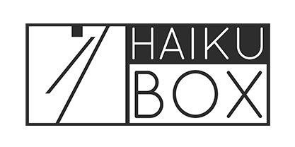
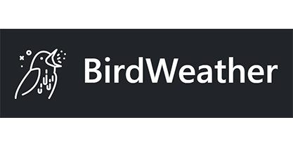
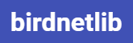
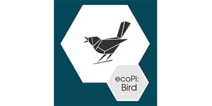
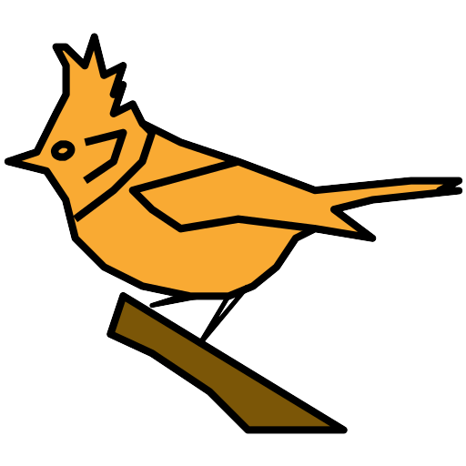
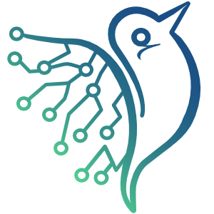
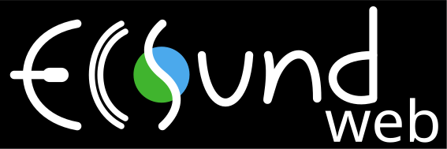
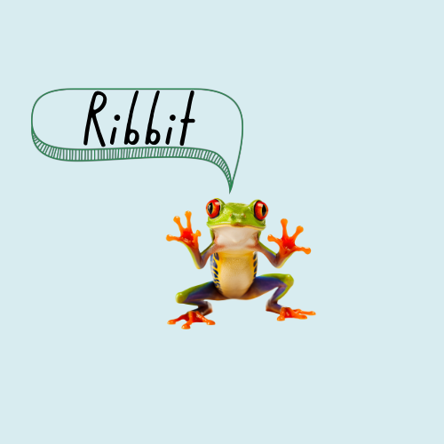

Showroom
BirdNET powers a number of fantastic community projects dedicated to bird song identification, all of which use models from this repository. These are some highlights, make sure to check them out!
|  | HaikuBox
Once connected to your WiFi, Haikubox will listen for birds 24/7. When BirdNET finds a match between its thousands of labeled sounds and the birdsong in your yard, it identifies the bird species and shares a three-second audio clip to the Haikubox website and smartphone app. Learn more at: HaikuBox.com
|
BirdNET-Pi
Built on the TFLite version of BirdNET, this project uses pre-built TFLite binaries for Raspberry Pi to run on-device sound analyses. It is able to recognize bird sounds from a USB sound card in realtime and share its data with the rest of the world. Learn more at: BirdNETPi.com
Note You can find the most up-to-date version of BirdNET-PI at github.com/Nachtzuster/BirdNET-Pi |
|
|  | BirdWeather
This site was built to be a living library of bird vocalizations. Using the BirdNET artificial neural network, BirdWeather is continuously listening to over 1,000 active stations around the world in real-time. Learn more at: BirdWeather.com
|
|  | birdnetlib
A python api for BirdNET-Analyzer and BirdNET-Lite. Learn more at: github.io/birdnetlib
|
|  | ecoPi:Bird
The ecoPi:Bird is a device for automated acoustic recordings of bird songs and calls, with a self-sufficient power supply. It facilitates economical long-term monitoring, implemented with minimal personal requirements. Learn more at: oekofor.netlify.app
|
Dawn Chorus
Dawn Chorus invites global participation to record bird sounds for biodiversity research, art, and raising awareness. This project aims to sharpen our senses and creativity by connecting us more deeply with the wonders of nature. Learn more at: dawn-chorus.org
|
|
Chirpity
Chirpity is a desktop application available for Windows, Mac and Linux platforms. Optimized for speed and ease of use, it can analyze anything from short clips to hundreds of hours of audio with unparalleled speed. Detections can be validated against reference calls, edited and saved to a call library. Results can also be exported to a variety of formats including CSV, Raven and eBird. Learn more at: chirpity.mattkirkland.co.uk
|
|
BirdNET-Go
Go-BirdNET is an application inspired by BirdNET-Analyzer. While the original BirdNET is based on Python, Go-BirdNET is built using Golang, aiming for simplified deployment across multiple platforms, from Windows PCs to single board computers like Raspberry Pi. Learn more at: github.com/tphakala/go-birdnet
|
|
|  | whoBIRD
whoBIRD empowers you to identify birds anywhere, anytime, without an internet connection. Built upon the TFLite version of BirdNET, this Android application harnesses the power of machine learning to recognize birds directly on your device. Learn more at: whoBIRD
|

|
Muuttolintujen Kevät
Muuttolintujen Kevät (Migration Birds Spring) is a mobile application developed at the University of Jyväskylä, enabling users to record bird songs and make bird observations using a re-trained version of BirdNET. Learn more at: jyu.fi
|
|  | FaunaNet
faunanet provides a platform for bioacoustics research projects and is an extension of Birdnet-Analyzer based on birdnetlib. faunanet is written in pure Python and is developed by the Scientific Software Center at the University of Heidelberg, Germany. Learn more at: faunanet
|
|  | ecoSound-web
ecoSound-web is a web application for ecoacoustics to manage, re-sample, navigate, visualize, annotate, and analyze soundscape recordings. It can execute BirdNET on recording batches and is currently being developed at INRAE, France. Learn more at: F1000Research and GitHub
|
|  | Ribbit
Record frog calls and the web app will tell you the species. Clip it, Ribbit! The app uses a custom classifier built with BirdNET embeddings to identify frog species and gives nature enthusiasts the possibility to learn more about amphibians. Learn more at: ribbit.edi.eco
|
Other cool projects:
BirdCAGE is an application for monitoring the bird songs in audio streams: BirdCAGE at GitHub
BattyBirdNET-Analyzer is a tool to assist in the automated classification of bat calls: BattyBirdNET-Analyzer at GitHub
Working on a cool project that uses BirdNET? Let us know and we can feature your project here.